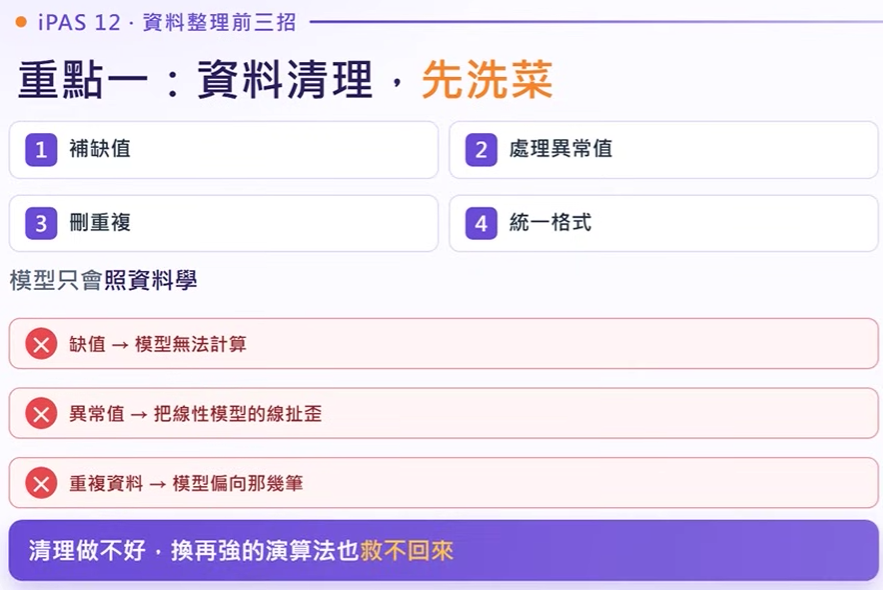
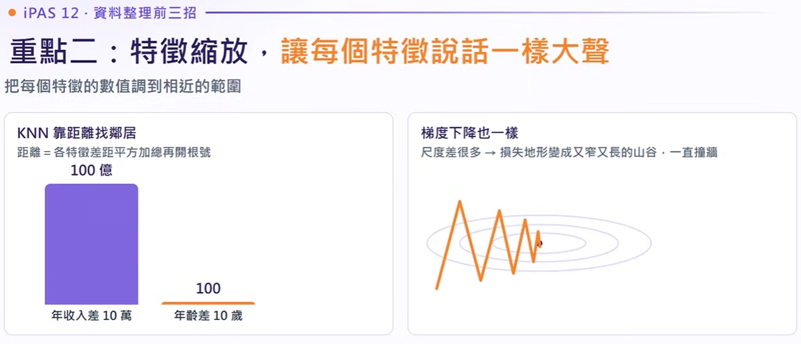
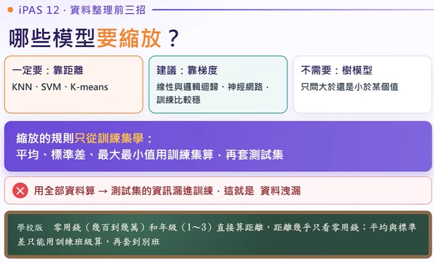
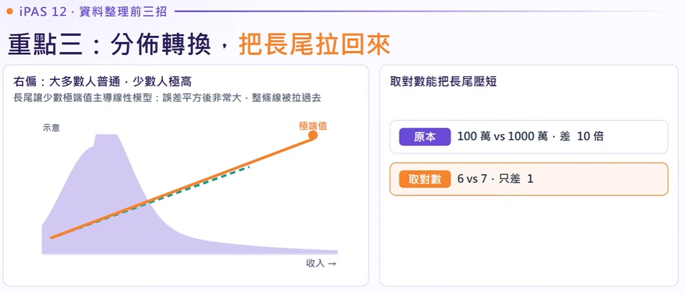

EP12. 資料整理前三招｜帶你看懂資料清理、特徵縮放和分佈轉換
在機器學習實務中，「資料品質與特徵表達」往往比演算法本身更能決定模型成敗。本章考點在歷屆考試中快速竄升（115 年單回即佔 6 題！）。本單元聚焦最核心的三大招：資料清理、特徵縮放與偏態分佈轉換。
工廠用 KNN 判斷零件是否合格，特徵包含「重量（數千公克）」與「厚度（數公釐）」。工程師發現：厚度明顯不合格的零件，模型卻判定為合格！該怎麼修？
💡 破題解析： KNN 透過歐氏距離比對鄰居，重量（數千）與厚度（個位數）相差上千倍，距離計算完全被重量霸占，厚度差異徹底被掩沒！必須藉由特徵縮放將尺度拉至對等地位。
本集 9 大精華投影片快速索引 韋哥投影片對照
點擊卡片快速跳轉至各投影片詳解，支援點擊圖片全螢幕放大與時間軸精確對齊
第十三章 · 資料準備與特徵工程 全景輪廓 命題高頻上升
兩回共 9 題、115 年單回 6 題！前三大核心占 4 題
- 1. 重點一 資料清理：缺值怎麼補、異常值要不要留、刪重複、統一格式（先洗菜）。
- 2. 重點二 特徵縮放：讓每個特徵說話一樣大聲，避免距離或梯度被大數字霸佔。
- 3. 重點三 分佈轉換：把右偏長尾拉回來，但要逐個特徵獨立判斷，避免破壞線性特徵。
重點一：資料清理（Data Cleaning）
重點一 · 資料清理，先洗菜（四招與錯誤代價） 基礎關鍵
模型只會照資料學，清理做不好，演算法再強也救不回

- • 四步驟：① 補缺值、② 處理異常值、③ 刪重複、④ 統一格式。
- • 缺失值危害：造成矩陣運算出現 NaN，模型直接中斷無法計算。
- • 異常值危害：極端離群值在平方誤差計算下會強行把線性回歸的線「硬扯歪」。
- • 重複資料危害：同一筆樣本多次出現，讓模型嚴重過度偏向那幾筆。
進模型前要先「洗菜」：補缺失值、處理異常值、刪重複、統一格式。清理做不好，再強的模型也救不回預測能力。
適用情境： 缺失極少、樣本充裕、隨機缺失（MCAR）。代價最小且不干擾分佈。
平均數 / 中位數 / 眾數： 快速處理。但若大批樣本補同一個數值，會直接壓低特徵變異數。
關聯填補： 找相近條件的樣本抄值，或以其餘高度相關欄位訓練回歸模型進行預測補值。
「沒有填寫」本身往往就是最強的訊號！例如：信用卡交易中的「交易地點為空」，極可能代表網路線上交易。此時直接刪除會遺失重要訊號，正確做法是新增一欄「缺失指標」或將其歸類為獨立的類別！
異常值偵測互動圖：IQR 四分位距法
點擊點或移動滑鼠檢視說明深度解析 · 模型對髒資料耐受度（樹模型 vs 線性/神經網路） 演算法對比
樹模型只看大小順序（比較耐）；線性/神經網路直接乘權重（極度敏感）
- • 樹模型（比較耐）：決策樹與隨機森林只看「大小順序」。年收入 1 億與 200 萬，在「大於 100 萬嗎？」這一刀都切到同一邊，完全不受離群值數值大小影響！
- • 線性與神經網路（敏感）：直接將輸入數值乘以權重加總，1 億的異常值會直接把預測值與梯度拉得巨大無比。
- • 學校版生動比喻：整理成績表，缺考補分數或註記缺考；年齡 150 歲是打錯要修；同一學生登記兩次要刪。
重點二：特徵縮放（Feature Scaling）
重點二 · 特徵縮放（讓每個特徵說話一樣大聲） 必考核心
把每個特徵數值調到相近範圍：KNN 距離吞沒、梯度下降撞牆震盪

- • KNN 距離計算被吞沒：歐氏距離等於各特徵差的平方和再開根號。年收入差距 10 萬（平方後 100 億），年齡差距 10 歲（平方後 100），年齡的微小差異直接被年收入徹底掩埋！
- • 梯度下降狹長山谷撞牆：特徵尺度相差巨大時，損失函數等高線呈狹長深谷，梯度沿著陡峭方向狂震盪（Zig-zag），收斂極度緩慢甚至無法收斂。
將各個特徵數值調整到相仿的數值尺度。不同演算法對特徵尺度的敏感度迥異：
不需要縮放！ 樹模型只問切分點（如：收入 > 100 萬嗎？）。數值無論放大 100 倍或縮小，分裂順序與門檻相對位置完全不變，對離群值與尺度差異天生免疫。
絕對必做縮放！ 歐氏距離平方會被大數字吞沒；梯度下降更會因為等高線呈狹長深谷而不斷橫向撞牆，大幅拖累訓練速度。
損失函數等高線：特徵縮放對梯度下降的影響
- 限制在 [0, 1] 範圍
- 影像像素除以 255 即為典型應用
- 最怕極端離群值（分母會被拉至極大）
- 轉換後 平均 = 0, 標準差 = 1
- 保留原本分佈形狀
- 不限定在 [0, 1] 區間
- 利用分位數而非平均值
- 抗離群值首選
- 最大值再大也不影響中位數與 IQR
哪些模型要縮放？· 規則只從訓練集學 · 嚴防資料洩漏 選型鐵律
靠距離（一定要）、靠梯度（建議）、樹模型（不需要）

- • 一定要做（靠距離）：KNN、SVM、K-means。未縮放直接失準。
- • 建議要做（靠梯度）：線性回歸、邏輯回歸、類神經網路，縮放後訓練平穩快速。
- • 不需要做（樹模型）：決策樹、隨機森林、XGBoost，只問切分點大於小於。
- • 嚴禁資料洩漏（Data Leakage）：平均值、標準差只能從「訓練集」計算，再套給測試集！若用全部資料計算，測試集資訊就洩漏到訓練期，造成成績虛高假象。
縮放參數（平均值、標準差、最大最小值）只能從「訓練集（Train Set）」計算！接著再拿相同的參數套用到測試集。若使用全體資料計算，測試集的資訊就偷偷溜進了模型訓練過程，造成評估虛高。如果測試集轉換後數值 > 1.0，完全合乎常理！
重點三：分佈轉換（Distribution Transformation）
重點三 · 分佈轉換（把長尾拉回來） 偏態處理
右偏態長尾讓極端值主導損失；取對數有效壓縮長尾

- • 右偏態（Right-skewed）：大多數人普通，極少數人坐擁極高值（收入、房價、網站瀏覽量）。
- • 線性模型災難：少數極端值在平方誤差計算下會產生巨額 Loss，整條回歸直線被硬扯過去。
- • 取對數 Log 壓短長尾：原本 100 萬 vs 1,000 萬相差 10 倍，取對數後變成 6 vs 7，僅差距 1！將長尾拉回逼近常態分佈。
真實世界的數值特徵（如年收入、房屋單價、點閱流量）多半具有「右偏態（Right-skewed / 正偏態）」特性：少數人坐擁極高值，拖著長長的右尾。
對數轉換（Log Transform）如何化長尾為常態
模型擁有「距捷運站距離」與「屋齡」兩個特徵。工程師測試發現：捷運距離取對數後模型預測變準，屋齡取對數後表現反而顯著下滑！為什麼？
💡 核心口訣： 分佈轉換必須「逐個特徵獨立判斷」，切忌全域整批轉換！
專指 Min-Max 特徵縮放，將數值範圍壓縮至 0 到 1 之間。
深度神經網路架構技術，在每層隱藏層對 mini-batch 輸入做標準化。
損失函數裡的 懲罰項（L1 Lasso, L2 Ridge），旨在抑制權重、防止過擬合。
三種轉換 · 一條規則（逐個特徵獨立判斷） 避坑鐵則
對數 Log、平方根、Box-Cox / Yeo-Johnson；不能全部一起轉！
- • 對數 Log：明顯右偏長尾（收入、銷售額、距離、房價）。
- • 平方根 / 立方根：中度偏態，縮小力道較對數溫和。
- • Box-Cox：自動找最佳參數，只能用於正數。改良版 Yeo-Johnson 支援 0 與負數。
- • 唯一鐵律（考題常考）：轉換要「逐個特徵獨立判斷」！本來與目標就是直線關係的特徵（如讀書時數與成績、房屋屋齡與折舊），硬取對數反而把直線變彎，導致模型表現變差！
最容易搞混的 · 三組易混淆觀念與三個「正」字輩 考前必避坑
正規化 vs 標準化 · 標準化 vs 特徵選擇 · 正規化 vs 批次正規化 vs 正則化
- 正規化 vs 標準化：正規化（Min-Max，壓至 0~1）；標準化（Z-score，平均 0、標準差 1）。
- 標準化 vs 特徵選擇（114-48 題陷阱）：標準化是「調尺度」；特徵選擇是「挑特徵」。
-
三個「正」字輩口訣：
- 正規化：Min-Max 尺度縮放
- 批次正規化：神經網路每一層輸入的標準化
- 正則化：防過擬合的懲罰項（L1/L2）
秒殺題感：題幹關鍵字訊號速查表
| 題目關鍵字訊號 | 直覺解題反應 |
|---|---|
| 缺失比例極低、樣本數充足、隨機遺漏 | 直接刪除法 (Drop) |
| 異常值本身即為預測目標（如：信用卡盜刷、洗錢） | 標記保留（絕對不可清洗移除） |
| 以距離為基準（KNN, SVM, K-Means） | 必須做「特徵縮放」 |
| 壓縮在 0 到 1 之間、影像像素除以 255 | Min-Max 正規化 |
| 轉換後平均為 0，標準差為 1 | Z-Score 標準化 |
| 資料含有離群值時的縮放工具 | RobustScaler（基於中位數與 IQR） |
| 數值嚴重右偏、拖著長尾的高額收入/房價 | 取對數轉換 (Log Transform) |
| 轉換後某個特徵模型表現反而顯著下降 | 該特徵與目標原本就是「線性關係」 |
這集帶走三句話 · 考前 30 秒記憶口訣 臨考心法
資料清理先問真假 · 距離梯度必縮放 · 長尾取對數逐個判斷
-
1
資料清理： 先問異常值是錯誤還是真的；是要抓的目標就不能清！（如信用卡盜刷、洗錢）
-
2
特徵縮放： 靠距離和梯度的模型要縮放；縮放的規則只能從訓練集學！（嚴防資料洩漏）
-
3
分佈轉換： 長尾取對數，但要逐個特徵判斷！（避免把原本的直線關係弄彎）
影片完整時間軸逐字稿
點擊任意時間戳記即可快速定位與聚焦閱讀
先問你一題：工廠用 KNN 判斷零件合不合格，特徵是重量和厚度。重量是幾千公克，厚度只有幾公釐。工程師發現厚度明顯不合格的零件，模型卻判成合格，該怎麼修？把 K 改成 1？先做特徵縮放？還是刪掉厚度這個特徵？先停下來想一下，答案在這一集後面揭曉。
這集進第 13 章「資料準備與特徵工程」。資料品質和特徵表達往往比演算法本身更決定模型好不好。這章要學會看到資料的毛病，知道該用哪一招處理。這個考點兩回共九題，115 年一回就考六題，是上升最快的考點。這集的前三個重點佔了其中四題。這集先講前三個重點：資料清理、特徵縮放、分佈轉換。
重點一：資料清理。 資料進模型前要先洗菜：補缺失值、處理異常值、刪重複、統一格式。模型只會照資料學，缺失讓模型無法計算，異常值會把線性模型的線扯歪，重複資料會讓模型偏向那幾筆。清理做不好，換再強的演算法也救不回來。
缺失值有五種處理法：缺很少、樣本很多、缺得很隨機，直接刪除；想快速處理，用平均數、中位數、眾數填補，代價是壓低變異；特徵之間有關聯，找條件相似的樣本抄它的值來補；特徵高度相關，用其他特徵訓練一個模型來猜缺失值；有沒有缺本身就有意義時，新增一欄記「這裡原本是空的」，叫缺失指標。
為什麼統計值填補會壓低變異？100 人裡有 30 人體重沒填，全部補成平均 60 公斤，等於多了 30 個一模一樣的 60，高矮胖瘦的差異被抹平了。
異常值怎麼抓？Z 分數是這個值減平均再除以標準差，離平均超過大概三個標準差就算異常；IQR 是四分位距，資料由小排到大，25% 位置的值叫 Q1，75% 位置叫 Q3，Q3 減 Q1 就是 IQR。低於 Q1 減去 1.5 倍 IQR 或高於 Q3 加上 1.5 倍 IQR 算異常。
抓到之後先問他是錯誤還是真的？999 歲是輸入錯誤，移除或修正；豪宅成交價是真的但太極端，截尾或取對數。截尾是定一個上限，超過的一律改成上限；詐欺交易這種異常本身就是我們要抓的目標，標記保留，絕對不能清掉。
算一次：某店每日營業額排序後，Q1 是 20 萬，Q3 是 30 萬。IQR 等於 30 減 20 是 10 萬，1.5 倍就是 15 萬。下界是 20 減 15 是 5 萬；上界是 30 加 15 是 45 萬。營業額低於 5 萬或高於 45 萬的日子算異常。
模型對髒資料的耐受度不同：樹模型像決策樹、隨機森林只看大小順序。收入 1 億和 200 萬，在「收入大於 100 萬嗎？」這一刀都只是分到同一邊，所以比較耐得住缺失值和異常值；線性模型和神經網路直接拿數值乘權重再加總，1 億會把預測值拉得很大，所以比較敏感。
學校版的比喻是整理全班成績表：缺考的補分數或標記缺考；年齡寫成 150 歲是打錯要修；同一位學生登記兩次要刪。但在作弊偵測裡，分數異常的正是要抓的人，不能清掉。
題目訊號整理一下：看到缺失比例極低、樣本充足，想到刪除法；看到特徵之間高度相關、用其他欄位推估，想到預測模型填補；看到異常值本身具有預測價值，想到標記保留；問哪種模型對缺值、異常值較有容忍度，想到樹模型；看到 Q1、Q3、1.5 倍，想到 IQR 法。
來看一個場景：某銀行要用交易資料訓練盜刷偵測模型，消費金額欄位有少數超過百萬的交易，交易地點欄位缺了 2%。大額交易要刪嗎？缺地點的交易要刪嗎？超過百萬的交易在盜刷常就是異常大額，這些點正是要抓的目標，標記保留。交易地點缺 2% 缺得少，但沒有地點可能代表網路交易，缺本身有意義，所以補一個缺失類別或加一欄缺失指標。用 IQR 把大額交易刪掉，等於把盜刷樣本丟掉；直接刪掉缺地點的交易，丟掉了網路交易這個訊號。
重點二：特徵縮放。 把每個特徵的數值調到相近的範圍。為什麼要做？KNN 用距離判斷誰是鄰居，距離是把每個特徵的差距平方後加總再開根號。年收入差 10 萬，年齡差 10 歲，平方後一個是 100 億、一個是 100，距離幾乎只由收入決定，年齡等於沒用。梯度一樣，特徵尺度差很多，損失函數的地形會變成又窄又長的山谷，下山時一直左右撞牆，收斂很慢。
三種方法：Min-Max 正規化，用這個值減最小再除以最大減最小，壓到 0 到 1 之間；Z-score 標準化就是剛才抓異常值用的 Z 分數，減平均再除以標準差，變成平均 0、標準差 1；Robust 縮放減中位數再除以 IQR，比較不怕離群值。Min-Max 為什麼怕極端值？資料 10, 20, 30, 40, 1000，分母是 990，前四個變成 0.01, 0.02, 0.03，全在 0 旁邊。Robust 只看排在中間的資料，最大值從 1000 變成 100 萬，中位數和 IQR 都不會變。
哪些模型要縮放？靠距離的一定要：KNN、SVM、K-Means；靠梯度訓練的線性與邏輯回歸、神經網路也建議縮放，訓練比較穩；樹模型不需要，它只問大於還是小於某個值，數值放大縮小不影響切法。還有一條：縮放要從訓練集算，平均、標準差、最大最小值只能用訓練集計算再拿去套測試集。用全部資料算，測試集的資訊就漏進訓練了，這就是資料洩漏。
回到開場那一題：KNN 靠距離，重量的數值比厚度大上千倍，距離幾乎只看重量，厚度的差異被淹沒。答案是先做特徵縮放，用 Z-score 標準化讓兩個特徵尺度一致。把 K 改成 1 不行，最近還是幾乎只由重量決定，而且只聽一個鄰居，那一個若是標錯的資料就會跟著錯；刪掉厚度更不行，厚度正是判斷不合格的關鍵。
重點三：分佈轉換。 很多數值資料是右偏的，大部分人收入普通，少數人收入極高，分佈拖了一條長的右尾。長尾會讓少數極端值主導線性模型。線性模型要讓所有誤差的平方加總最小，一筆誤差特別大的極端值平方後會非常大，模型為了壓低它，整條線就被它拉過去。取對數能把長尾壓短，100 萬和 1000 萬差 10 倍，取對數後變成 6 和 7，只差 1。明顯右偏的收入、銷售額、距離、房價適合取對數。
最重要的一條規則：轉換要逐個特徵判斷，不能全部一起轉。某個特徵和目標本來就是直線關係，硬取對數反而把直線變彎。學校版的比喻是全校零用錢大多幾百元、少數幾萬元，取對數後差距被壓短；但讀書時數和成績本來就是直線關係，硬取對數反而變彎。
來看 115 年考過的場景：房價模型有距捷運站距離和屋齡兩個特徵。距離取對數後模型變好，屋齡取對數後模型反而變差，為什麼？距離嚴重右偏，取對數把長尾壓短，關係變得比較直；屋齡和房價本來就大致成直線，每一年降一些，取對數把直線變彎，破壞了原本的結構。所以只對距離取對數，屋齡保持原樣。
最後分辨這集最容易搞混的名詞：正規化是 Min-Max 壓到 0 到 1；標準化是 Z-Score 平均 0、標準差 1；特徵選擇是挑特徵。還有三個「正」：正規化是 Min-Max 縮放；批次正規化是標準化每一層的輸入；正則化是防過擬合的懲罰項。
這集帶走三句話：資料清理先問異常值是錯誤還是真的，是要抓的目標就不能清；靠距離和梯度的模型要縮放，縮放的規則只能從訓練集；長尾取對數，但要逐個特徵判斷。下一集進第 13 章後半：類別編碼、造特徵、特徵選擇、資料增強。